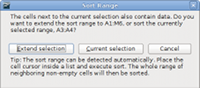

OpenOffice.org 3.2 New Features
Contents |
|
|
|
|
The full technical release notes containing a list of features and integrated child workspaces can be read here. |
|
General Improvements
Faster start up times
OpenOffice.org 3.2 Calc and Writer have both reduced 'cold start' time by 46% since version 3.0 was released just over a year ago, according to tests by our developers (results will vary on different operating systems and hardware).
ODF Support
Open Document Format (ODF) standards, as promulgated by the Organization for the Advancement of Structured Information Standards (OASIS), set international compatibility criteria for the electronic/digital storage of documents.
These standards recognize the importance of interoperability and intelligent information exchange and seek, for example, to ensure that office documents created today on any given computer system will be readable by other computer systems everywhere, including the technology of tomorrow.
OpenOffice.org 3.2 has made further strides in compliance with ODF 1.2, including closer conformance to OASIS ODFF/OpenFormula specifications.
- As OpenOffice.org 3.2 currently requires a superset of the ODF 1.2 specification, the software now warns users when ODF 1.2 Extended features have been used.
- The document integrity check now proves whether an ODF document conforms to the ODF specification (this mainly affects ODF 1.2 documents). If an inconsistency is found, the document is treated as a broken one, and OpenOffice.org offers to repair the document.
Proprietary File Support
OpenOffice.org 3.2 provides improved support for other common office document types.
- Password protected Microsoft Office XML files (supported document types: MS Word 2007 documents (*.docx, *.docm); MS Word 2007 templates (*.dotx, *.dotm); MS Excel 2007 documents (*.xlsx, *.xlsm); MS Excel 2007 binary documents (*.xlsb); MS Excel 2007 templates (*.xltx, *.xltm); MS Powerpoint 2007 documents (*.pptx, *.pptm); MS Powerpoint 2007 templates (*.potx, *.potm)).
- OLE objects, form controls and pivot tables can now be read from MS Excel 2007 documents (*.xlsx, *.xlsb).
- Encryption support within the Microsoft Word 97/2000/XP filter allows password protected Microsoft Word documents to be saved (using the Microsoft Office standard RC4 algorithm).
- Filters for AportisDoc and PocketWord now support type detection based on DocType. As a result, files in these formats can be loaded without explicitly selecting the document type in the file picker.
- When writing string data to SYLK files, embedded double quotes are no longer escaped by doubling; semicolons are now escaped by doubling. This improves compatibility with files created by other applications.
Support for Postscript based OpenType fonts
There are many high quality commercial and free OpenType fonts that are based on Postscript outlines. They are now supported for formatting, printing, PDF-export and display.
Writer
Autocorrect word completion
Writer can remember permanently any additions to the autocorrect list collected while working on a document. A new CheckBox When closing a document, remove the words collected from it from the list makes this functionality more obvious.
Mediawiki support moved to an Extension
To avoid conflicts, the MediaWiki filter is no longer part of the OpenOffice.org installation. Instead it will be supplied as a part of Wiki Publisher extension, which will permit updates for the filter without having to wait for the next OpenOffice.org release.
Calc
Cell borders now support multiple selection
 Previously it was only possible to apply
cell borders to a single rectangular cell range. Now borders can be applied
to any selection of cells. A list of rectangular ranges is determined from
the selection, and inner/outer borders are applied to each of the
ranges.
Previously it was only possible to apply
cell borders to a single rectangular cell range. Now borders can be applied
to any selection of cells. A list of rectangular ranges is determined from
the selection, and inner/outer borders are applied to each of the
ranges.
Autofill now handles additional cases
If the starting cell for AutoFill contains a number at the start and the end, and there's no space after the first number, the number at the end is now incremented. This allows easier creation of things like lists of IP addresses (10.0.0.1 is followed by 10.0.0.2).
Improvements to sort
If "Sort" is invoked with a selection that is likely not to be the range the user wants to address, a new dialog will ask if the selection should be extended to contain the additional cells.
{kind=link}
When a cell range is sorted using the "Sort Ascending" or "Sort Descending" toolbar button, cell formats are now sorted with the cells.
Better handling of merged cells
Merged cells can now be pasted from the clipboard onto other merged cells. Instead of an error message, the old cells are unmerged
Inserting or deleting cells, columns or rows into/from the middle of merged cells, which previously caused an error message, is now possible. The merged cell range is enlarged/reduced.
Complex copy and paste
This feature extends Calc's current copy and paste functionality, to allow copying of a set of multiple non-contiguous ranges. When pasted, all copied data get consolidated into a single range either horizontally or vertically. There are some restrictions when ranges are being copied, in order to ensure that the pasted range become a rectangular range.
Enhancements to statistical functions
- NORMDIST's 4th parameter is now optional.
- 0 or FALSE calculates the probability density function. Any other value or TRUE or omitted calculates the cumulative distribution function.
- If omitted, 1 is written to files for backwards compatibility.
- LOGNORMDIST's 2nd and 3rd parameters are now optional, an optional
4th parameter has been added.
- The 2nd, mean, parameter has the default value 0 if omitted.
- If omitted, 0 is written to files for backwards compatibility.
- The 3rd, standard deviation, parameter has the default value 1 if omitted. If omitted, 1 is written to files for backwards compatibility.
- The 4th, cumulative, parameter is defined as - 0 or FALSE calculates the probability density function. Any other value or TRUE or omitted calculates the cumulative distribution function. - If a value was given, earlier releases reading the file cannot interpret the function and return an error.
Preservation of newline characters in formulae
Newline characters created with Control+Enter in multiline text cells are now preserved in spreadsheet formulas. Previously the newline character was replaced by a space character. The newline character can be searched for using the SEARCH or [HV]LOOKUP or MATCH functions with the \n regular expression.
Numeric conversion in strings
While interpreting a formula expression, string content is now converted to numeric values if conversion is unambiguous, or a #VALUE! error is set if no unambiguous conversion is possible. Leading and trailing blanks are ignored.
Note: conversion on the fly naturally is significantly slower than calculating with numeric values. Users may be prefer the Convert Text to Number (CTN) extension to interactively convert textual numbers to permanent numeric values.
Additional functionality in filters
 The "Standard Filter" dialog now shows 4
instead of 3 conditions, and has a scroll bar which allows to access up to
8 conditions in total. It now supports the filter conditions 'Contains',
'Does not contain', 'Begins with', 'Does not begin with', 'Ends with' and
'Does not end with'.
The "Standard Filter" dialog now shows 4
instead of 3 conditions, and has a scroll bar which allows to access up to
8 conditions in total. It now supports the filter conditions 'Contains',
'Does not contain', 'Begins with', 'Does not begin with', 'Ends with' and
'Does not end with'.
Improved reference toggling
The Shift-F4 shortcut to toggle between relative and absolute references in formulas can now be used for a selection of cells, and handles all the formula cells in the selection.
Many new factors in CONVERT_ADD
The CONVERT_ADD spreadsheet function (known as CONVERT in other applications) has many more conversion factors implemented, as defined in OASIS ODFF/OpenFormula.
{kind=link}
New UNICODE and UNICHAR functions
The new UNICODE and UNICHAR spreadsheet functions are implemented as defined in the OASIS ODFF/OpenFormula specification.
- UNICODE returns the Unicode Standard / ISO 10646 code point corresponding to the first character of the text value;
- UNICHAR (UNICODE CHARacter) returns Character for any valid Unicode code point.
Draw
New style comments
Draw now supports comments (formerly known as sticky notes) to support collaboration
Page Count added to Draw
Draw now supports the text field "Page Count".
Impress
New style comments
 Impress now support comments (formerly known
as sticky notes) to support collaboration
Impress now support comments (formerly known
as sticky notes) to support collaboration
Page Count added to Impress
Impress now supports the text field "Page Count".
Math
Change to Math menus
The menu entry "View / Selection" in Math is now labeled "View / Formula Elements".
Base
Customising the Create Database Wizard
OpenOffice.org 3.2 introduces a configuration option to control the availability of the "Create new database" option in the "Create Database" wizard.
A new configuration option controls whether the "Create Database" wizard (started via File/New/Database) exposes the "Create a new database" option.
Simpler copying of queries between database documents
When copying queries between database documents, Base will no longer prompt for a target name, unless the copy operation would overwrite an existing table name.
Database forms can be zoomed
Database forms can now be zoomed just like other documents. The current <Ctrl+Scroll Wheel> functionality is supplemented by a View/Zoom menu item, and the zoom slider in the status bar.
More intelligent import into Base
The Copy Table Wizard now contains an additional check box which is enabled when RTF or HTML format data is to be copied into a database. The check box is labelled: Use first line as column names: when checked the first row is used to identify column names, when not checked the first row is treated as a normal data row.
{kind=link}
For further details of Base new features, please see the wiki.
Chart
New Chart types
The Chart Wizard - used to create charts - now also includes Bubble and a new variant of Net - Filled Net (Radar) charts.
{kind=link}
Usability improvements in Chart
The Chart user interface has been given a makeover to improve aspects of usability. Users will note the generic Object Properties tag has been replaced by more specific terms such as Format Legend.... Menus are more context aware, ensuring the tools they need are only amouse click away. For full details, please see the GullFOSS blog posting.
Enhancements to data labels
The options for data labels have been extended. It is possible now to rotate data labels. This is useful especially for column charts to avoid overlap between the different labels.
Asian typography page for chart elements
A new tab page Asian Typography is now available for Title, Legend, Axes and Data Series. It contains an option to enable or disable the spacing between the different types of text.
Internationalization and Localizations
New Locale support
OpenOffice.org 3.2 adds locale data for Oromo_Ethiopia [om-ET], Uyghur_China [ug-CN], Ancient Greek [grc-GR], Somali_Somalia [so-SO], Sorbian, Lower [dsb-DE] and Upper [hsb-DE, Asturian_Spain [ast-ES], Yiddish_Israel [yi-IL], Arabic (Oman) [ar-OM], Sardinian_Italy [sc-IT, and Quechua (Ecuador) [qu-EC].
Typically, the locale is selectable for character attribution and spell-checking, as default locale and default document language, and is available for number formats and outline numbering - see the Release Notes for details.
Japanese Name Order
In a Japanese Locale the order of the FirstName / LastName fields in the user data tabpage is reversed. This feature is not bound to the UI language, but to the selected Locale.
Support for Graphite font technology
OpenOffice.org now supports Graphite font technology for enabling the use of the sometimes very complex minority scripts and variants. OpenOffice.org learns to handle such a script just by the user installing a matching Graphite font, as opposed to requiring specific application or operating system updates. This simplified approach considerably helps minorities to use their scripts, to preserve their literary texts as close as possible to the original, and thus to keep their cultural heritage.